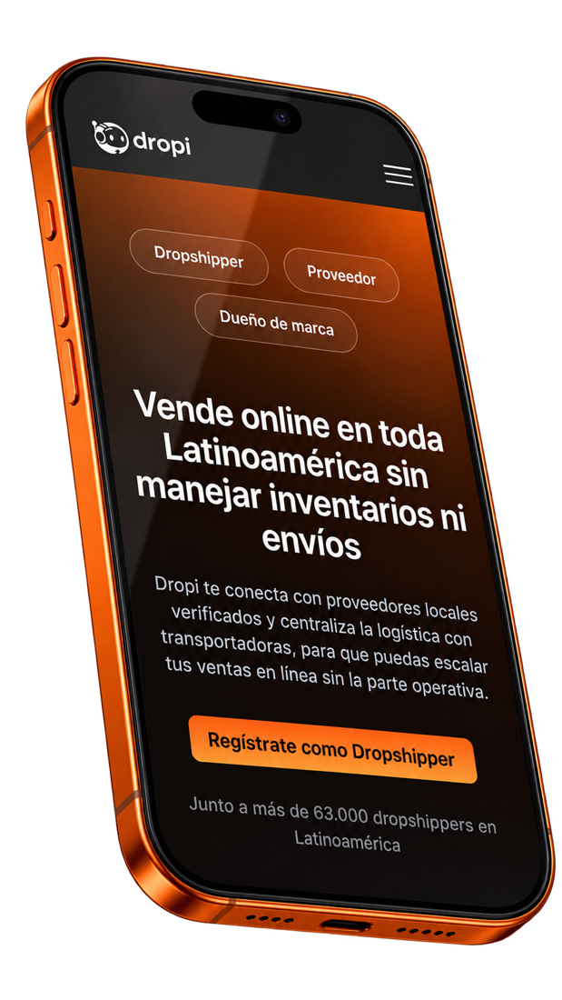
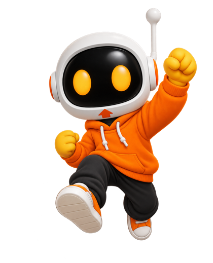

Estrategia que
crece con IA
ContenidoNegocio
Estratega Digital & Creativa. Conecto contenido, plataforma y negocio para convertir comunicación en crecimiento.
Luisa Fernanda Pérez Selada · Octubre 2026

Activación MCP
Estrategia con intención, de la idea al resultado
Lo que hago
Convierto objetivos de negocio en campañas, contenidos y journeys medibles.
Cuatro áreas, una sola estrategia: las piezas encajan.
Estratega Digital & Creativa: función transversal dentro de Growth
Detectar
Datos · tendencias · comportamiento · oportunidades
Diseñar
Campañas · storytelling · journeys
Conectar
Growth · Creatividad · Comunicaciones · Eventos · Producto
Optimizar
KPIs · aprendizajes · experimentación
Entender por qué hacer cada contenido, para quién, dónde y qué debería generar.
De la idea a la mejora, en ciclos
Roadmap estratégico
Campañas prioritarias, objetivos, audiencias, canales y KPIs.
Plan de acción
Campañas activas, contenidos, experimentos y resultados.
Optimización
Análisis, ajustes y nuevas oportunidades.
Qué entrego (toca cada uno)
Una función transversal: el centro que conecta todas las áreas
Luisa Salcedo
Directora de Growth
Creatividad
Concepto · diseño
Comunicaciones
Mensaje · canales
Estratega Digital & Creativa
El centro que conecta
Eventos
Activaciones
Producto
Onboarding
No estoy por encima de Creatividad, Comunicaciones, Eventos o Producto: estoy en el centro para conectarlas, y respondo a Luisa Salcedo.
De una funcionalidad a un sistema de adopción
El valor del MCP no está en que lo conozcan, sino en que lo usen.
¿Qué puede hacer? (toca cada opción)
Gestionar
Operar
Logística
Comprador
Campaña 360°: todo en colaboración
Teasers · problemas reales · casos de uso · curiosidad · comunidad
Video principal · demo · contenido educativo · activación multicanal
Onboarding · tutorial · primera victoria · primera consulta
Tips · automatizaciones · casos reales · email · WhatsApp
Historias de usuarios · apps creadas · retos · comunidad
Con: Creatividad · Comunicaciones · Eventos · Producto
Que el lanzamiento no llegue de la nada: 2 semanas de expectativa y 1 de lanzamiento
Intriga sin revelar nada
Pistas del problema, no del producto
De mirar a usar
Medición común: se toma una línea base antes de la semana 1 y se compara semana a semana. Las metas numéricas se definen con los datos reales de Dropi.
Los lanzamientos no terminan en Instagram: viven en el home y en Academy
Dropi Academy · Dropi + Claude
Primero: qué es y para qué sirve.
Después: conectar Dropi a Claude y hacer la primera consulta.
Por último: el manual para consultar cuando lo necesites.
Cada pieza destraba una etapa del journey: descubrir → aprender → usar → descubrir más.
“Emprender, pero más fácil”
Campaña de lanzamiento Dropi + Claude · TikTok + Instagram Reels · 3 videos, 1 cada 3 días · 25–40 s.

Laura Vanegas @lauravanegasf
No es una “influencer que vende Dropi”: es una emprendedora y mamá que descubre herramientas que le ayudan a simplificar su negocio.
Necesito otro par de manos
Le pregunté a la IA
No se trata de hacerlo todo sola
No: “Compra Dropi.” Sí: “Descubrí una herramienta que me está ayudando a trabajar mejor.” La IA no reemplaza al emprendedor: le ayuda a trabajar mejor.
No medir cuántos vieron, sino qué acción generó
Alcance
No seguidores · búsquedas de marca
Interés
Retención · compartidos · guardados · comentarios con intención
Activación
Conexiones MCP · primera consulta · tutoriales completados
Retención
Usuarios activos · apps creadas · referidos
Ciclo de optimización
Conectar contenido, plataforma y negocio bajo una misma lógica
Diseño
Pienso la experiencia completa.
eCommerce
Entiendo el negocio y el journey.
Contenido
Convierto lo complejo en historias.
Estrategia
Conecto objetivos, canales y resultados.
IA
Exploro nuevas formas de crear y activar.
Estrategia que se convierte en acción
Growth × Creatividad × Comunicaciones × Eventos × Producto
Liderazgo directo: Luisa Salcedo · Directora de Growth